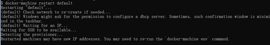
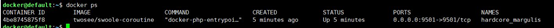

原文连接:https://www.cnblogs.com/itsuibi/p/10698180.html
之前文章讲过在windows系统安装 cgywin 从而安装swoole扩展的操作，但是安装cgywin的时候会出现这样那样的问题。所以今天记录下另一种方式使用docker 安装 swoole 环境！
什么是docker
Docker 是一个开源的应用容器引擎，让开发者可以打包他们的应用以及依赖包到一个可移植的容器中，然后发布到任何流行的 Linux 机器上，也可以实现虚拟化。容器是完全使用沙箱机制，相互之间不会有任何接口。
如何安装docker
http://mirrors.aliyun.com/docker-toolbox/windows/docker-toolbox/
windows安装docker
https://www.cnblogs.com/itsuibi/p/8992332.html
挂载目录
启动docker
1.在Oracle VM VirtualBox 中设置共享文件夹
2.重启docker
docker-machine restart default

连接default虚拟机
Docker-machine ssh default
使用mount 查看挂载

Docker 基本操作命令
搜索 Docker search swoole
下载 Docker pull twosee/swoole-coroutine
查看本地image Docker images

运行指定image docker run -it -v /swoole:/www/code -p 9501:9501 twosee/swoole-coroutine bash
查看本地文件夹到docker的映射
xshell 连接docker
ip：192.168.99.100（具体看启动时分配的IP地址）
默认同户名：docker
默认密码：tcuser
查看正在运行的容器 docker ps

进入正在运行的docker exec -it 容器id bash
开启容器 docker start 容器id
关闭容器 docker stop 容器id